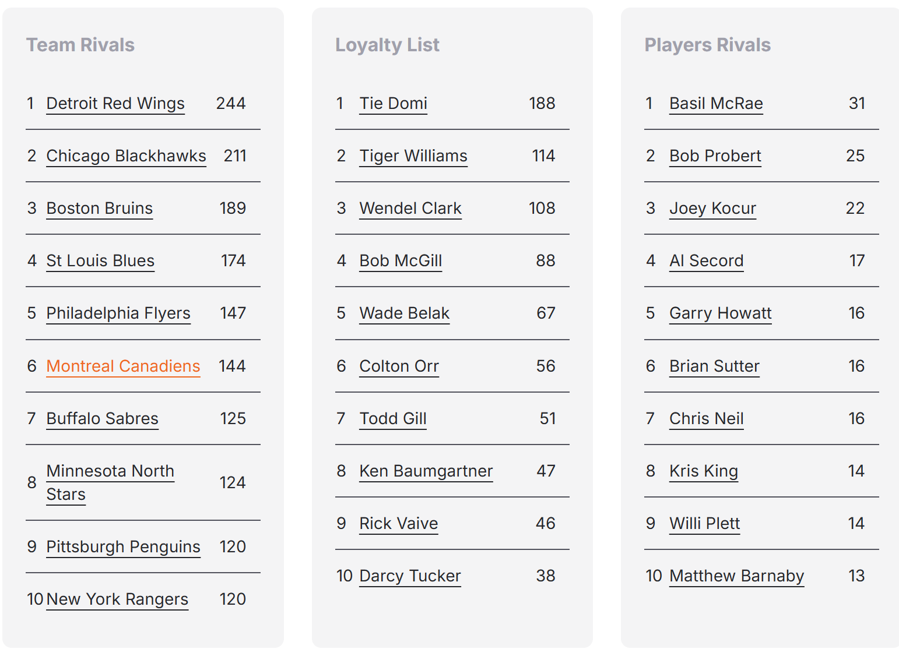
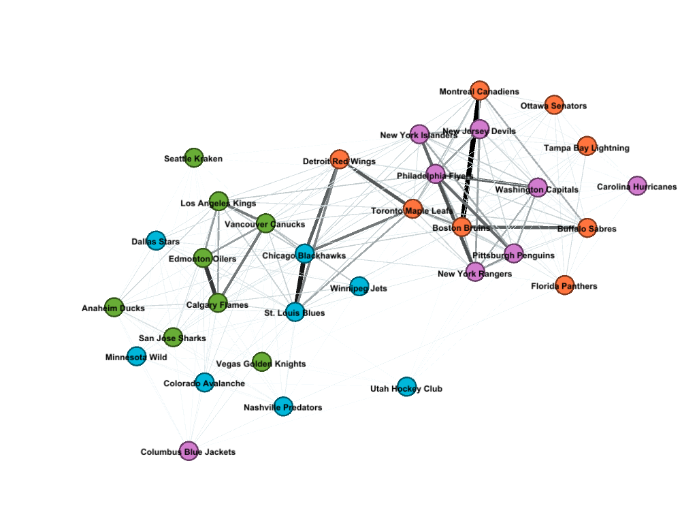
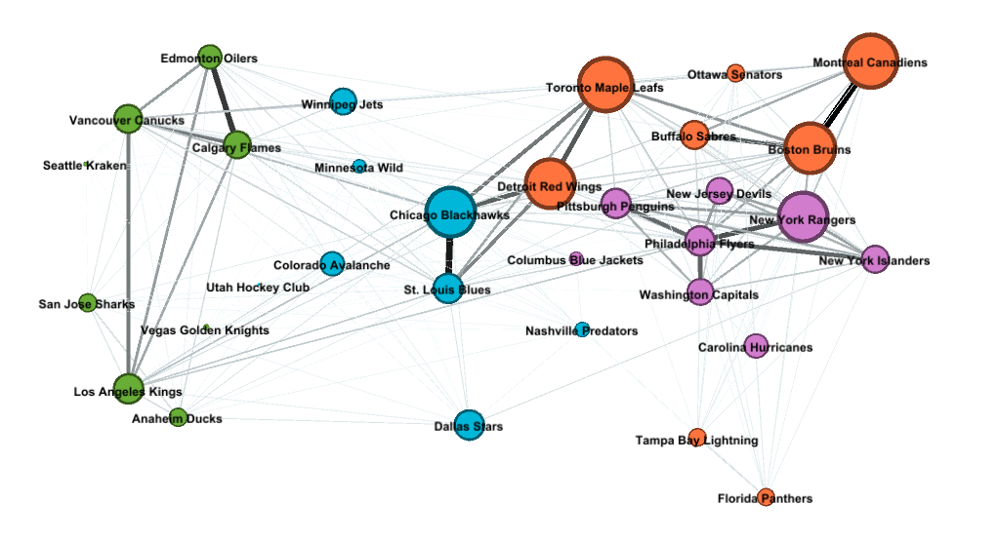

NHL Rivalries
If anything can bring a sport's team fanbase together, it's the mutual hatred for another team. Rivalries might be the most important aspect of any team's identity. But which team is the most rivalrous? Which teams have the strongest rivalries? Are there any other patterns we can identify that can teach us about the history of a franchise or a league? Let's use network analysis to find out.
But first, what is a network?
A network consists of nodes, which represent single objects, and edges, which represent relationships between objects. Networks are often used in the context of social connections, linking websites, or semantic logic. In the following networks, the nodes are teams and the edges are rivalries.

Methodology
The goal of this project is to measure and visualize rivalries between NHL teams. There are many ways to quantify a rivalvry, but for this simple analysis, I will measure the strength of the rivalry by the number of on-ice fights all-time.
The website Hockey Fights has easily accessible, but sparse and sometimes inconsistent data on inter-team fight totals for every team. This will be the dataset used, recognizing that there are some major flaws.
This is the page for the Toronto Maple Leafs, showing the top 10 leaderboard of teams with the most fights.
For each team in the league, an edge will be added between them and every team that appears in their leaderboard, along with the number of fights indicated. This will be collected into a single csv file, where every row becomes an edge between two teams.
The software I'm using for the visualization is Gephi, an easy to learn software for network visualization. I simply import my csv file and it will create a network for me, complete with several algorithms for laying out the nodes, and customizable appearances.
Results
Yifan Hu
I decided to try a few methods for placing the nodes on the graph, each that can reveal new insights about the data. The first algorithm I tried was Yifan Hu. This algorithm treats edges like springs, and places nodes based on which directions they would be attracted in.
Note that I have distinguised edge weights in this network. More fights = more edge weight = darker and thicker line. Note also that the Yifan Hu algorithm does not consider edge weight in its node placement. In the following network, they are purely visual.
Green - Pacific (West), Blue - Central (West), Orange - Atlantic (East), Pink - Metropolitan (East)
The first thing that is apparent to me in this graph is that it is almost perfect split into the Western Conference and the Eastern Conference. This should not be surprising, since a team will play an in-conference team more often than it will play an out-conference team, and games played correlates positively with fights.
Still, this tells us that our data makes sense, and that Yifan Hu is working properly as it was able to come up with a sensible layout.
Another interesting thing I see in this graph is that there exists a "bridge" between the two groups, in that Toronto and Detroit are strongly connected to Chicago despite being in separate conferences. This makes sense considering the history of these franchises. These were the three most western Original Six teams, who played many games together from 1942-1970. But, since the 1970 expansion, constant reshuffling meant that the three teams rarely played in the same division. Today, Chicago remains separated from the other two, but this graph shows us that they still retain their Original Six DNA.
Columbus's loose affiliation with the West also makes sense, since they have spent around half of their short existence in the Western Conference.
Geographical
For this network, I manually arranged the teams according to their geography, to the best of my ability (no algorithm involved). Additionally, I included franchise age as a parameter. A great feature from Gephi is graph customization based on parameters, and in this network, older teams will have larger nodes.
Teams laid out according to geography. Older franchises have larger nodes
There are many things I have to say about this layout, so I made a list:
- The two darkest/thickest edges (strongest rivalries) are for Montreal-Boston and Chicago-St.Louis. The geographic layout shows that distance between teams is correlated with rivalry. These teams are also some of the oldest in the league, as seen by node size, and this makes sense since generational rivalry has had time to marinate.
- Looking west, there exists a "death triangle" of a sort with Vancouver, Edmonton, and Calgary. These rivalries have been forged in proximity and regional identification/representation (see Battle of Alberta). To some extent, the triangle can be extended to LA to form a "kite". Being the oldest teams in the West, the four fanbases developed tense relationships independent from the East.
- The geographically closest teams in the league exist in and around the US's Northeast Megalopolis, occupying the aptly named 'Metropolitan Division'. These teams, namely both New Yorks, New Jersey, Philadelphia, etc. are so close on a map that it could not even be cleanly represented on the graph. While not having the individually strongest rivalries of the league, these teams form a dense mesh of moderately heavy edges. Much can be said concerning the history and culture of this area to warrant such strong loyalty to one's own city and such ire for another's, but I simply don't have the space here to dive into it.
- Lastly, it should be pointed out that the newer teams like Vegas, Seattle, and Utah, which are so young that they can hardly be seen, obviously have not developed strong rivalries yet. Much of the rivalry between two teams relies on the history surrounding them. For teams without history, these kinds of relationships cannot form.
Fruchterman Rheingold
This last network here was created using the Fruchterman Rheingold algorithm. This algorithm was designed to place nodes in a way that heavy edges don't cross as much, which aids visibility.
Additionally, this graph includes a new parameter: eigenvector centrality
Essentially, eigenvector centrality measures the "influence" that a node has on the rest of the network. It tends to favor interconnectedness, and many moderate edges over few heavy edges. In this graph, nodes with higher eigenvector centrality appear larger.

Network with Fruchterman Rheingold layout. Larger nodes = high eigenvector centrality.
Predictably, most Original Six teams are large since they are established. Chicago has the highest eigenvector centrality, intuitively because it is the bridge between East and West, as discussed earlier.
If you can spot Montreal near the center of the graph, you'll notice that they appear very small. This means they ended up with a very small eigenvector centrality. This is because their only real contribution to the network is their single large rivalry with Boston. Other than that, according to the data, Montreal is not so influential. [1]
The "dark horse" of this graph is Philadelphia, seen near the bottom left. They have a large eigenvector centrality, making them more apparent on this graph than in the previous ones. As alluded to in the previous section, Philadelphia is very involved in its region. The city has a certain reputation for being passionate about their sports, and eigenvector centrality ends up being an interesting showcase of this passion.
Limitations and Suggested Improvements
This section is essentially for me to rant about the many problems with the data and suggested ways to improve this.
- My data source, HockeyFights, only gives the 10 highest fight-count-teams for each team, meaning a lot of missing data. Teams ended up with differing numbers of edges depending on how many times they showed up in other team's lists. After careful thought, my solution to this problem was simply to include as much information as the site gave me. This introduced some bias, giving some teams more edges than others.
- The data was inaccurate and not self-consistent. For example, on Toronto's page, they have 244 fights with Detroit. On Detroit's page, they have 243 fights with Toronto. This is contradictory. I was forced to arbitrarily choose one of these values every time the problem came up. This also brings up questions about the reliability of the data.
- HockeyFights was not designed as a database. As such, there was no easy way to import the data they showcased. So, I manually collected and input data into an Excel sheet. This was not fun.
- The data consisted of now-defunct teams, like the Quebec Nordiques, for some teams' totals. It remains ambiguous how to treat this data-wise (i.e should a relocation reset the fight total or keep it going?). I figured that I only wanted to show current teams along with the "reset" fight total, but this could have gone either way.
If I were to do this analysis again, I would have chosen a better data source. Something like SportsDataverse's HockeyR would have automated the data collection process and has more complete data.
Footnotes
^[1] As a Leafs fan, this is surprising to me. Alas, this graph is only as correct as the data.